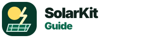

Option 1 — Current bold mark
Dark green icon, sun, panel, lightning bolt. Strong but maybe a little busy.
Brand exploration
A few alternate directions: more professional, more utility/toolkit, more minimal, and more bold-badge. None of these has to be final — this is for narrowing the direction.
Dark green icon, sun, panel, lightning bolt. Strong but maybe a little busy.

Similar idea, but heavier and more balanced. Feels like a real app/tool brand.
Less icon-heavy, more modern. Probably the safest direction for a content/affiliate site.
More authoritative. Suggests buyer protection / guidance, but may feel a little insurance-like.
Leans into “kit” and DIY planning. Friendly for RV/cabin/off-grid buyers.
Simpler and cleaner. Easier to use everywhere, but less distinctive.